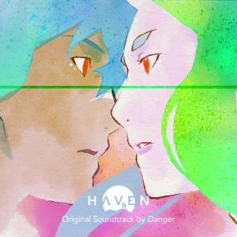

Danger, des albums aux jeux vidéos

Artiste reconnu maintenant pour faire des musiques. Franck Rivoire plus connu sous le nom de Danger nous montre sa transition de carrière.
Danger est un artiste qui a été influencé notamment par Capcom ou Konami. Au début il a commencé en tant que designer graphique en créant une bande dessinée du nom de son pseudonyme "Danger". Ayant fait du solfège pendant plusieurs années, il se concentre sur la musique électronique, c'est alors que sa carrière commence.
En 2014, il sort son EP nommé July 2013. Cet EP parle de la création de son masque qu’il a créé. Ce masque est fortement inspiré de l’univers des jeux vidéo. Il fait rappeler aux mages noirs de la saga de jeux vidéo Final Fantasy réalisé par Square Enix. Ce masque est pour lui, un moyen de battre sa timidité. En 2017, il sort son 1er Album du nom de Taiko (ou 太鼓). Il fera les premières parties de la tournée accompagné de Madeon ou encore Porter Robinson. De plus, ses noms de musiques ont une petite particularité. Ce sont les horaires ou Danger à fini ses compositions sauf pour les remix qu’il fait. Mais il n'a pas fait des musiques que pour lui !
En savoir plus sur sa discographieEn composant ses propres musiques, il a aussi participé à la création de musiques de jeux vidéo. Notamment chez The Games Bakers, une société française de jeux vidéo basée à Montpellier. Il a composé pour deux jeux. Furi et Haven où il a fait 5 musiques pour Furi, un Shoot’em up où l'on doit battre des gardiens pour enfin avoir la liberté au sein d’une prison. Et Haven où il a fait toute la bande-son du jeu.
“J'ai travaillé sur la musique pendant tout le développement du jeu. J'ai commencé alors que Haven n'était encore que des personnages et un scénario écrit sur quelques feuilles, et j'ai continué jusqu'à il y a… Trois semaines ! Au dernier moment, je finissais encore des petits trucs sur certaines musiques.” Mais il n’y a pas que ici que les jeux vidéos s’installe